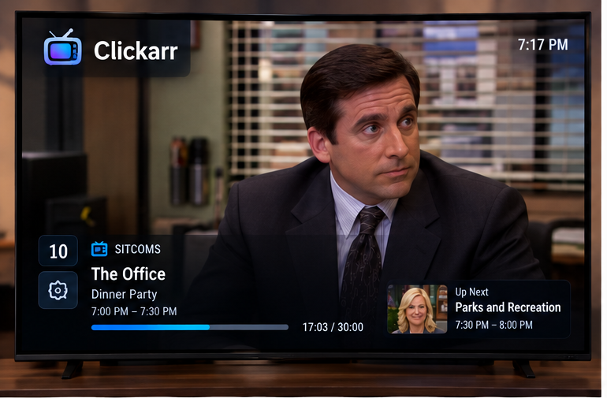
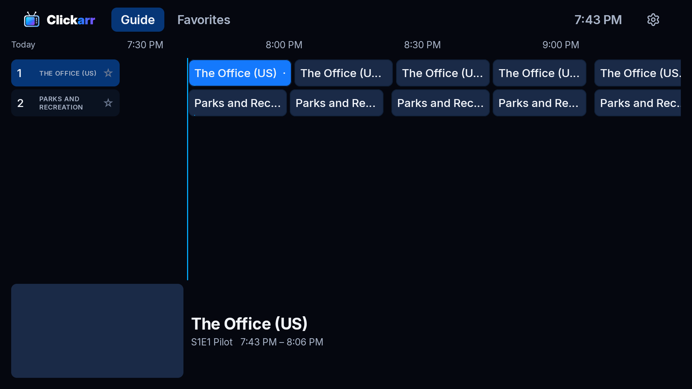
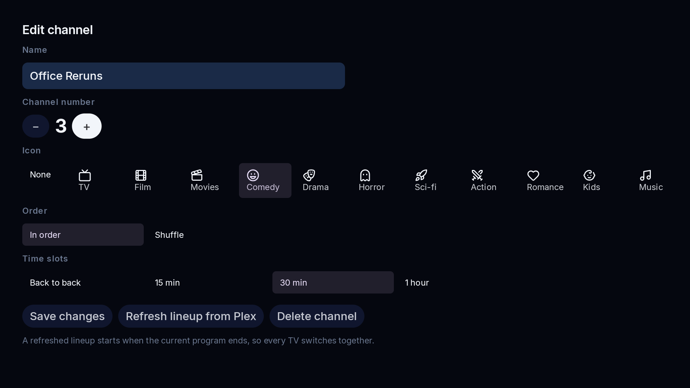
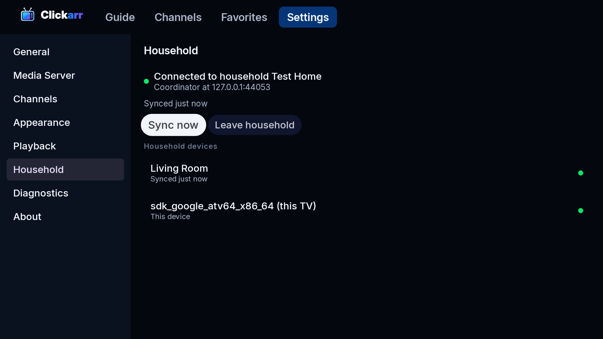
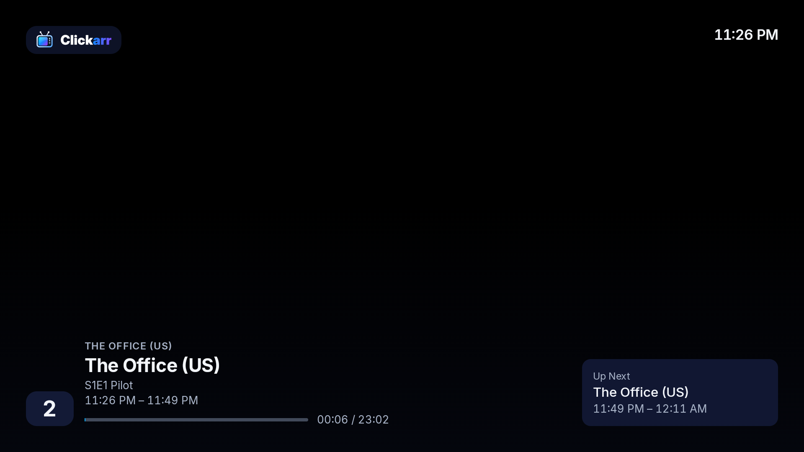
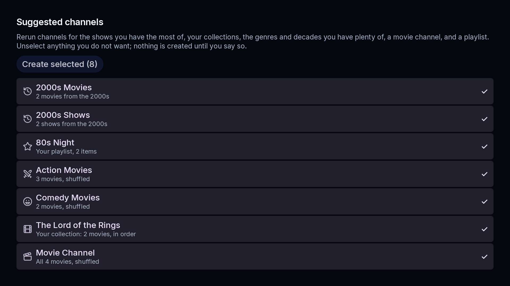
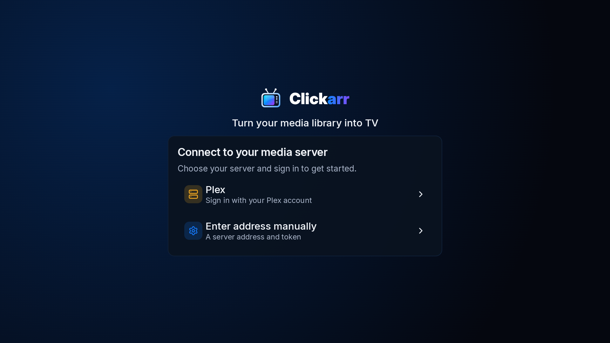

Live TV channels from your own Plex library, with a real guide and a remote that surfs. No subscription, no server to babysit, and no cloud account in the middle.

Turning a Plex library into live channels is not a new idea. But the ways to do it tend to cost money every month, need a server or container running around the clock, put a cloud account between your TVs, or leave out the things that make it feel like TV. Clickarr was built to be the one without the catch.
| Often elsewhere | Clickarr | |
|---|---|---|
| Price | A monthly or yearly subscription | Free, MIT licensed, no ads, no tracking |
| What you run | A server or Docker container, always on | One APK on the TV. Every TV works out the schedule itself |
| Keeping TVs in sync | The vendor's cloud account | Your own Wi-Fi, or your own Google Drive |
| Your Plex history | Continue Watching fills up with half-watched channel episodes | Off, mark watched only when you sat through it, or full progress: your call |
| Your Plex sign-in | Handed to a server or a service | Stays in the TV's Keystore and never syncs |
| Video | Sometimes relayed through another box | Straight from your Plex server to the TV |
Media servers make you browse, pick, and press play every single time. Clickarr brings back the part of television that was actually good: turning it on and seeing what's on.
Open app → browse library → choose title → choose episode → play
Open app → something is already playing → change channels → watch
Build channels out of what you already own. Give each one a number, a name, and a schedule. Then tune in.
Channel 10 · Sitcoms 7:00 PM The Office 7:30 PM Parks and Recreation 8:00 PM Seinfeld 8:30 PM Community Tune in at 7:17 PM and you land 17 minutes into The Office. Leave, come back at 7:52, and Parks and Rec is 22 minutes in.
Real screens, captured by the test suite on every build.

Two hours across, a now-line, a preview card with artwork and synopsis for the focused program, and stars on the channel column for favorites. Up and down follow the time column, OK tunes in.

Build a channel from shows, a whole library with genre and decade filters, a collection, or a playlist. In order or shuffled, with two or three episodes of a show in a row if you like, back to back or on the half hour.

Several TVs share one lineup and agree on the schedule over your own Wi-Fi, paired with a PIN over TLS. No extra server, no cloud account. Or sync through Google Drive for TVs in different homes.

Tune in and you are mid-episode, like television. The overlay shows the channel, the program, where you are in the slot, and what is up next.

Clickarr reads your library once and proposes a starting lineup the way you would make it by hand: a rerun channel for each show you have the most of, your collections, the genres and decades you have plenty of, a shuffled movie channel, and a playlist. Untick what you do not want; nothing is created until you say so.

Sign in to Plex with a code on your phone, or type an address and token. Your sign-in stays on the TV, in its own Keystore, and is never synced.
The features that always seemed to be missing from the other options.
An app that holds your Plex sign-in should earn it.
The Plex sign-in lives in the TV's Android Keystore. It never syncs to other TVs and never appears in logs or Diagnostics.
TVs pair with a one-time PIN and pinned certificates, so a random device on your Wi-Fi cannot join your household.
Google Drive sync uses the smallest permission Google offers. Clickarr can see the one file it created, not the rest of your Drive.
Every release is built twice in CI and checked to match, then signed. The signing fingerprint is published so you can verify the APK.
No analytics and no Clickarr servers. It talks to your Plex server, to GitHub when you check for updates, and to Google only if you turn on Drive sync.
The security review, including the known limitations, is written up in SECURITY.md.
The name is a nod to Sonarr, Radarr, and the rest, and so is the attitude: self-hosted, open source, opinionated, and built to automate the tedious part so you can stop tending your library and start watching it. Clickarr suggests channels from what you own, keeps every TV on the same schedule without a server in the middle, and writes its decisions down in public. It is an independent project, not affiliated with or endorsed by the Servarr team.
One APK. Sideload it once and it keeps itself up to date.
Install Downloader from the Amazon Appstore, then enter clickarr.net/apk.
Download the APK from GitHub Releases and install it with your favorite file manager or ADB.
The daily build is at clickarr.net/nightly. Switch between release and nightly in Settings, About.
Questions, lineups, and bug reports: r/Clickarr and GitHub issues. Built for Plex first, with a lot of help from Claude.